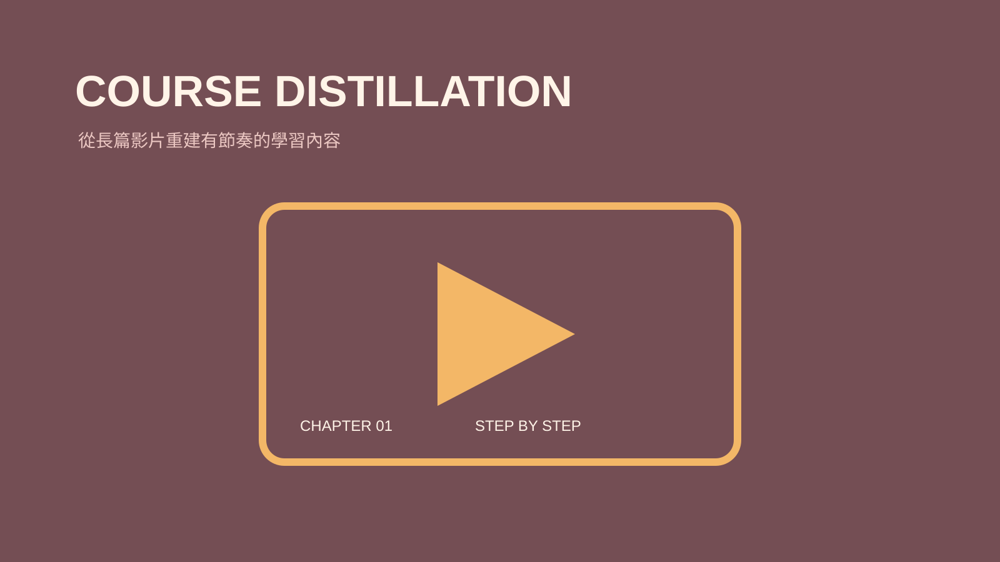

技能包 · 學習工具 · 教學工具
課程影片蒸餾
2026.08 · 個人專案

FIG. 33 — 產品主畫面
關於這個作品
課程影片蒸餾運用 NotebookLM 將長篇逐字稿按主題重組，還原成接近一頁頁簡報的教學脈絡、操作步驟與案例。流程保留來源、完成歸檔並清理暫存資源。
作品亮點
以 NotebookLM 建立專用的暫存研究空間
依章節與主題還原課程核心內容
整理步驟、範例與可教學的文字結構
保留逐字稿來源、完成歸檔並清理暫存資料